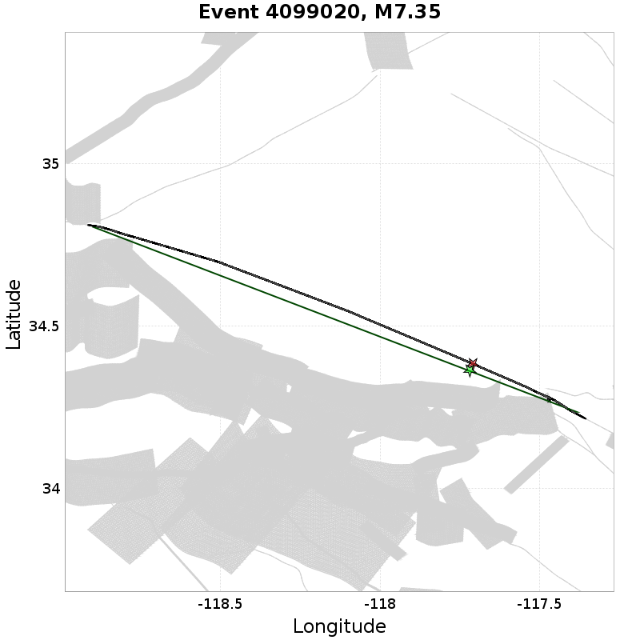

| Catalog | U3 1mil Element Test |
|---|---|
| Author | Jacqui Gilchrist, 2017/09/27 |
| Description | Test 1 million element catalog on UCERF3 fault system, ~0.25 km^2 trianglar elements |
| Fault/Def Model | Fault Model 3.1, Geologic |
| Slim Velocity | 1.0 m/s |
Legend

34.0192, -118.286


34.064987, -117.29201